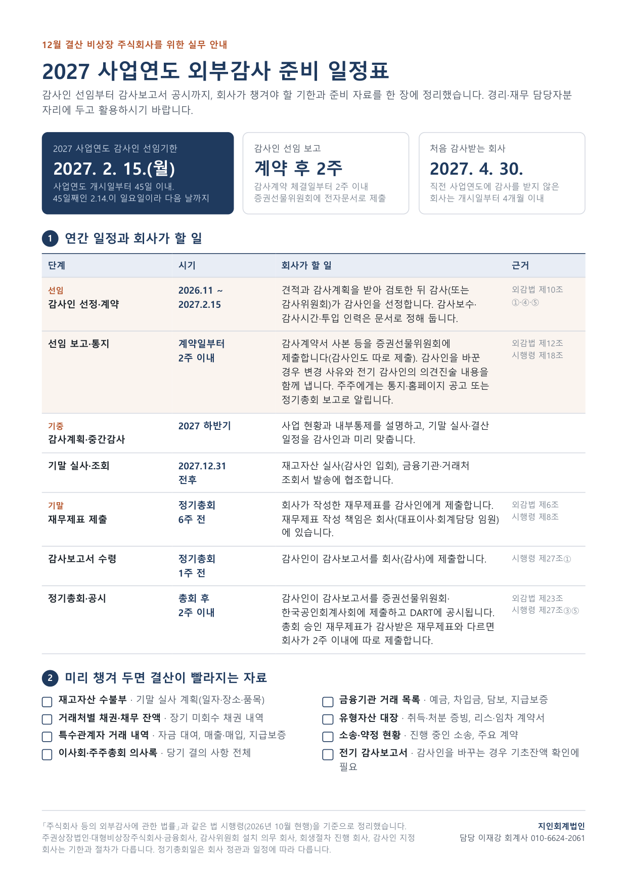
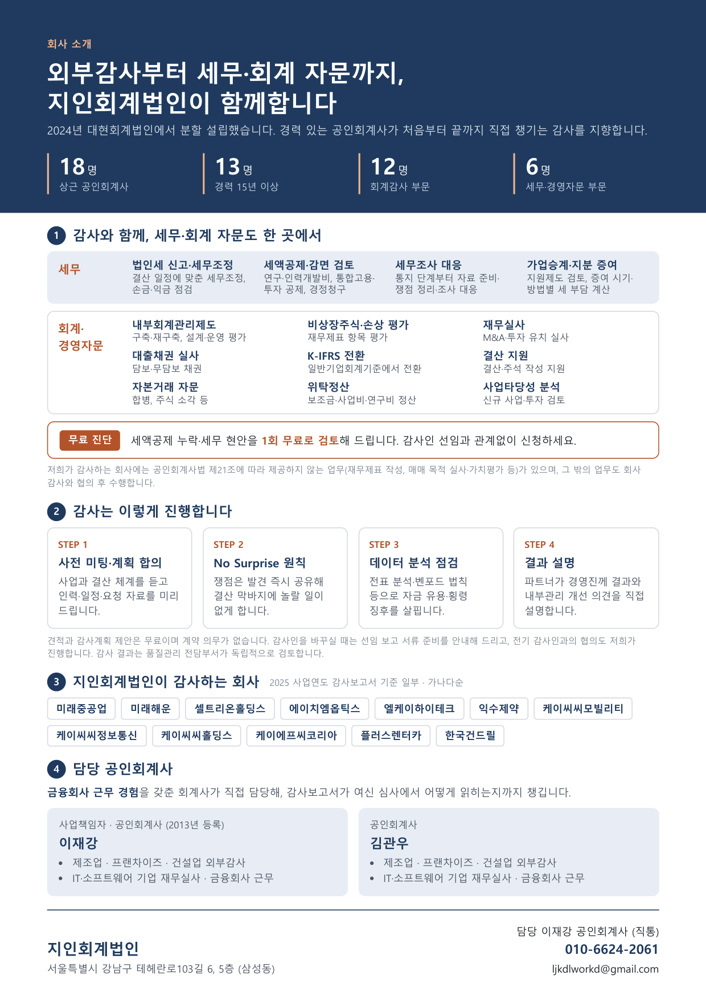

지인회계법인
2027 사업연도 외부감사 준비 안내
우편으로 보내 드린 안내문의 동봉자료입니다. 앞면은 감사인 선임부터 공시까지의 일정표, 뒷면은 법인 소개입니다.
인쇄용 PDF 열기
A4 2쪽 · PDF를 연 뒤 인쇄하시면 됩니다.
귀사 숫자로 바로 확인해 보세요 (무료, 입력값은 저장되지 않습니다)
외부감사 대상 자가진단 →
올해 대상인지, 감사인 선임기한은 언제인지
외감 진입 시기 예측기 →
최근 2~3년 숫자로 몇 년부터 대상이 되는지
외부감사 준비 일정표 →
귀사 결산월·주총일 기준 날짜, 캘린더 파일로 받기
첫 감사 준비 자가진단 →
준비 점수와 감사 때 요청받을 자료 목록(엑셀)
앞면 · 2027 사업연도 외부감사 준비 일정표

뒷면 · 지인회계법인 소개
